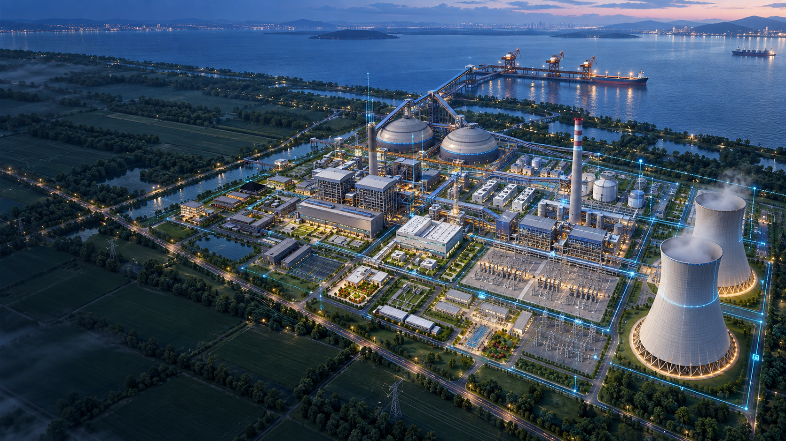
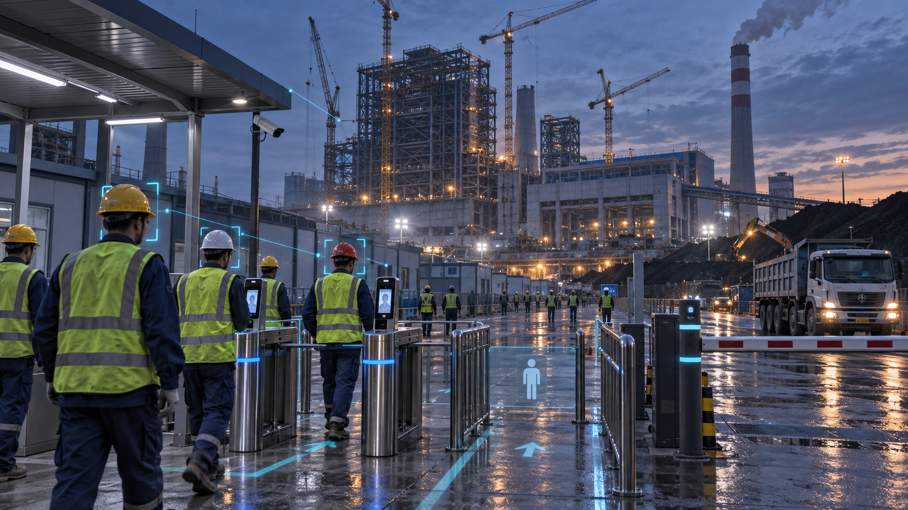
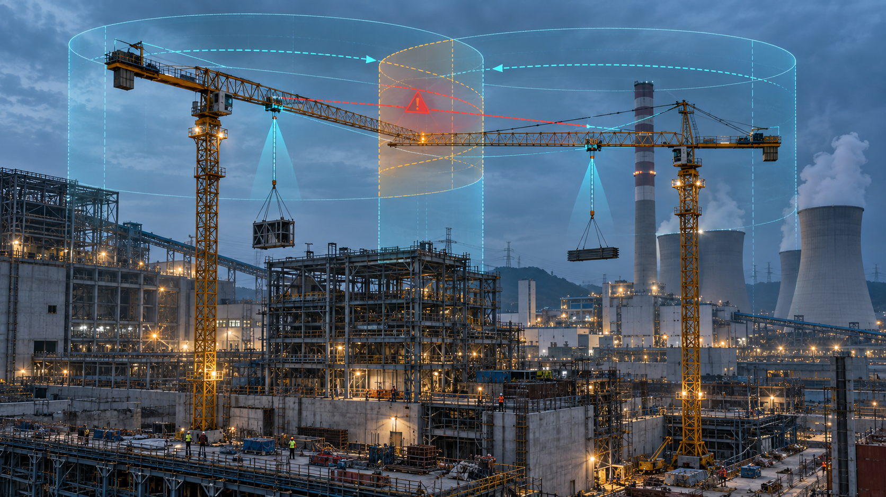
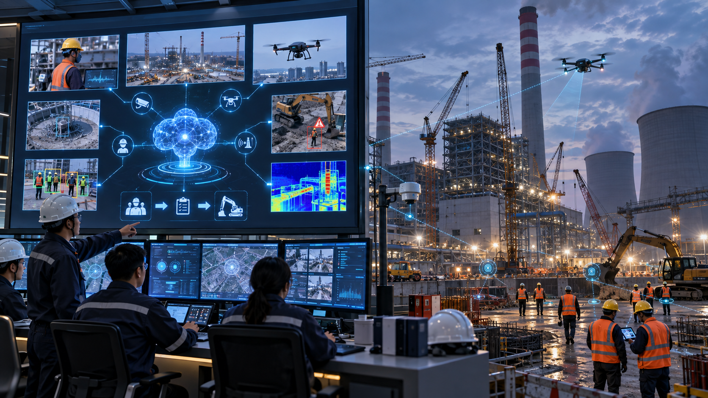
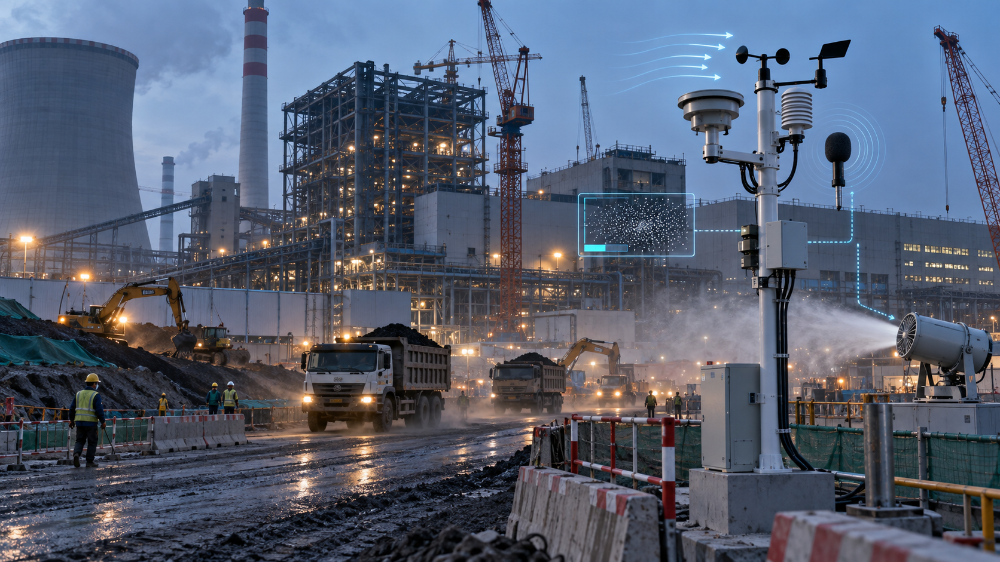
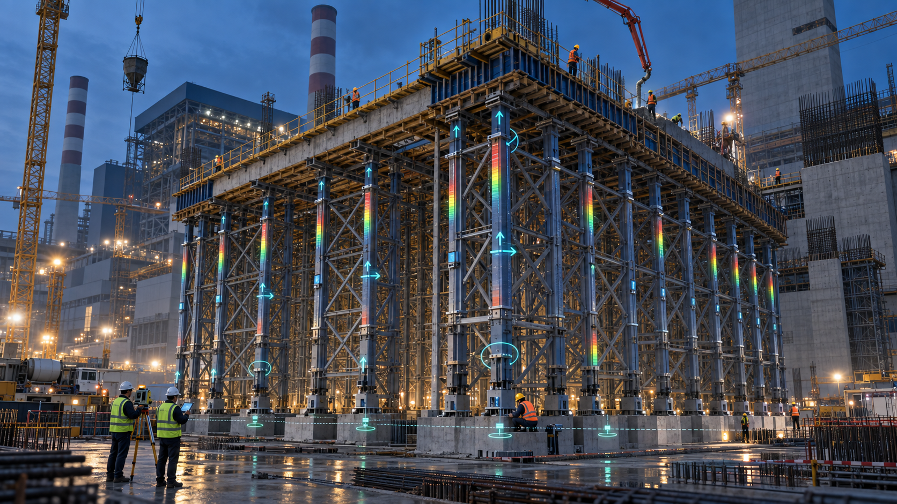

人员流动与资质复杂
入场教育、考试、体检、资质、班组、区域权限和退场记录分散，难以形成完整人员档案。

火电建设专业密集、参建单位多、交叉作业频繁，现场感知设备只有进入统一业务流程，才能把零散数据转化为可预警、可处置、可追溯、可验收的管理能力。
入场教育、考试、体检、资质、班组、区域权限和退场记录分散，难以形成完整人员档案。
塔机、升降机、移动机械和运输车辆并行作业，司机身份、运行状态与周边风险需要联动管理。
高处、吊装、动火、受限空间、脚手架和临时用电等作业，需要从许可到销项形成闭环。
视频、定位、传感、巡检、进度、质量和物资数据分散，无法支撑统一研判和调度。
施工期系统若缺少永临结合规划，网络、设备、BIM模型、台账和质量数据难以向生产期有效移交。
以基建MIS承接业务与数据，以中枢整合AI、孪生和物联能力，以五大业务域形成现场闭环，以智能终端持续提供可信数据。
承载进度、质量、安全、工程、物资设备等业务，并提供统一门户、身份权限、流程、工单、报表和接口服务。
U安智巡AI中枢、BIM+GIS数字孪生中枢、IoT+视频数据中枢。
人员管理、机械车辆物资、AI应用、绿色和环境管理、危大工程管理。
门禁、定位、安全帽、塔机、升降机、车辆、地磅、视频、无人机、机器狗和传感器。
基建MIS不是第六个业务域，而是智慧建造平台基座；上承五大业务域和三类能力中枢，下接现场终端与本地基础设施。系统部署于电厂项目现场，驾驶舱仅作为统一展示窗口。
基建MIS作为平台业务与数据基座，支持完整建设和既有系统集成两种模式；驾驶舱负责汇聚展示现场智能化、AI、视频、物联、工程业务和数字孪生数据。
选择业务域查看对应系统、终端与闭环。各业务域共享基建MIS平台基座提供的组织、权限、编码、告警、工单、报表和接口能力。
以人员统一档案为主线，连接登记、体检、教育、考试、准入、定位、行为积分、兑换激励与分级惩戒，形成施工人员全生命周期管理。
把人员身份、班组、资质、安全教育和区域权限统一校验，形成“登记—授权—通行—追溯”的现场准入闭环。

实名制门禁BUSINESS CLOSED LOOP围绕机械安全、车辆管理和物资计量三条业务线，贯通司机身份、设备状态、作业风险、车辆轨迹与物资进出场数据。
对司机身份、塔机运行参数、相邻塔机与障碍物关系进行实时监控，并通过吊钩可视化降低盲吊风险。

塔机安全监控MACHINERY SAFETY LOOP以安全生产大模型为能力中枢，接入固定视频和各类移动终端，把识别、研判、人工复核、告警、整改和报告串成闭环。
统一接入视频、图片、巡检记录、项目制度和风险知识，为各类巡检终端提供辅助识别、依据引用、处置建议与报告生成能力。

U安智巡能力中枢AI SAFETY CLOSED LOOP持续感知施工环境、气象水情、气体风险、资源消耗与污水排放水质，按照项目点位和阈值配置形成监测、预警、处置与趋势分析。
对施工区域扬尘、噪声和气象参数进行连续采集，支持超限告警、趋势统计及喷淋雾炮等治理设备联动。

环境监测ENVIRONMENTAL LOOP面向火电施工阶段的高支模、深基坑、脚手架、钢结构、大型吊装和高耸构筑物，形成专项方案、监测预警与责任处置闭环。
对高支模关键杆件受力、沉降、位移和倾角进行连续监测，在异常趋势达到设定阈值前发出分级预警。

高支模监测HIGH-RISK WORKS LOOP永临结合不是把临时设备直接留下，而是从设计、规格、网络分区、编码和验收开始判断哪些设施可永久使用、哪些可迁移复用、哪些数据应持续继承。
光纤骨干、部分机房与服务器资源、公共区域视频和部分门禁。需要纳入永久工程设计、采购与验收。
摄像机、边缘网关、显示屏及部分环境气象设备，提前规划安装接口、迁移位置和复用条件。
BIM模型、资产编码、设备台账、质量记录和竣工资料从施工期开始按移交标准建设。
塔机、升降机、高支模、深基坑等随施工阶段部署，完工后拆除、调拨或在其他项目复用。
通用方案在具体项目中需根据建设阶段、总平面、施工组织、既有系统和采购边界进行裁剪，避免一次性堆叠全部系统。
盘点组织、施工阶段、重点风险、网络条件、既有平台和永临结合要求，形成分期建设清单。
建设网络、边缘计算、统一身份、数据标准、物联接入、视频融合和平台大屏基础能力。
依托基建MIS平台基座，优先实施人员准入、机械安全、AI巡检闭环和危大工程，再扩展绿色环境与物资协同场景。
持续治理数据、优化AI应用，完成设施复用、模型轻量化、资产编码和工程档案移交。